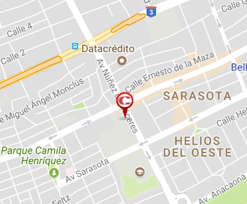

Downtown Center
 |
|
| Localidad: | Santo Domingo |
| Ubicacion: | venida Nuñez de Cáceres esquina Rómulo Betancourt, Bella Vista, Santo Domingo, Rep. Dom. |
| Telefono: | 809-797-2121 |
| Precio Taquillas: | Entrada regular todos los días $275 // Precio niños (2-10 años) $150, 3D Adultos $325.00, 3D Niños (2-10 años) $200 // 4DX $600.00// VIP $600.00// CXC 2D $375.00// CXC 3D $400.00. |
| Horario: | 6:30 PM - 11:00 PM |
| Descripción |
Es el cine más grande del área del Caribe, cuenta 16 salas digitales HD, 2 salas CXC (con sonido Dolby Atmos, proyección 4K, asientos numerados), 5 salas 3D, Sala 4DX Popular experiencia envolvente que activara todos tus sentidos (agua, burbujas, movimiento, aire, niebla, olores, nieve). Moderno Candy Bar con Deli Café, Cinema Gelato, sala de lactancia. Siendo todas las salas tipo stadium seating con altas butacas reclinables en fina piel. Sonido digital de última generación.
|
|  |